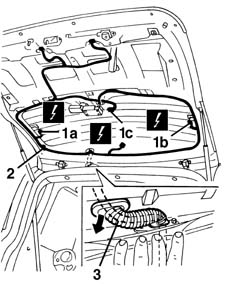
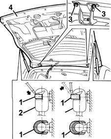

7015A20 TAILGATE - R.R.
- Path
- Procedures > 70 FITTINGS > 7015 TAILGATE/FLAP > 7015A tailgate assembly > 7015A20 TAILGATE - R.R.
- Kind
- repair procedure (removal / refitting; the operation number is the code)
- Applies to
- all engines; all production periods
- Interactive page
- https://sloeber94.github.io/elrnDB-fMltpl/en/#/2892113
Applies to: all engines; all production periods
 Removing
Removing
 Refitting
Refitting7015A04 tailgate interior panel - r+r
5540A94 l/h or r/h number plate light (one) - r+r (right and left)
7015A58 internal tailgate moulding (one) - r+r
1. Disconnect the electrical connections from the heated rear window and windscreen wiper motor (1a, 1b, 1c).
 | Name | Connector |
|---|---|---|
1a | Heated rear windscreen |
| Name | Connector |
|---|---|---|
1b | Heated rear windscreen |
| Name | Connector |
|---|---|---|
1c | Rear window wiper motor |
2. disconnect the wiring from the retainers.
3. Withdraw the wiring from the tailgate, pulling it through the cable pass.

Applies to: all engines; all production periods
1. Support the tailgate and, using a screwdriver, prise off (without detaching) the lift device retaining clips.
2. Disconnect the top end of the lift devices.
3. Undo the hinge bolts.
4. Remove the tailgate.

Applies to: all engines; all production periods
Refitting
RemovingCheck that the tailgate and hinges are undamaged.
Check that the wiring is undamaged and that the individual conductors are firmly attached to the connections.
Fit the tailgate.
Tighten the bolts to the specified torque.
 | Fastening | Component | Ø | Value (daNm) |
|---|---|---|---|---|
- | Bolt | Tail-gate | M6 | 0.8 - 1.0 |
Connect the top end of the lift devices and fit the retaining clips.
Fit the tailgate wiring in its seating and connect it to the retainers.
Connect the electrical connections of the heated rear window and windscreen wiper motor.
7015A58 internal tailgate moulding (one) - r+r
5540A94 l/h or r/h number plate light (one) - r+r (right and left)
7015A04 tailgate interior panel - r+r
7015A14 tailgate - adjust centring and profile - includes hinge and compartment seal adaptation
Topics linked from this page (7)
- 5540A94 l/h or r/h number plate light (one) - r+r
- 7015A04 tailgate interior panel - r+r
- 7015A14 tailgate - adjust centring and profile - includes hinge and compartment seal adaptation
- 7015A58 internal tailgate moulding (one) - r+r
- N16 Rear window wiper motor
- P055A Heated rear windscreen ( LEFT TAILGATE )
- P055B Heated rear windscreen ( LEFT TAILGATE )